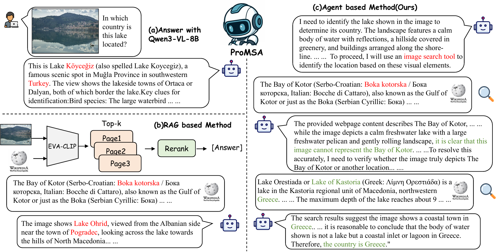
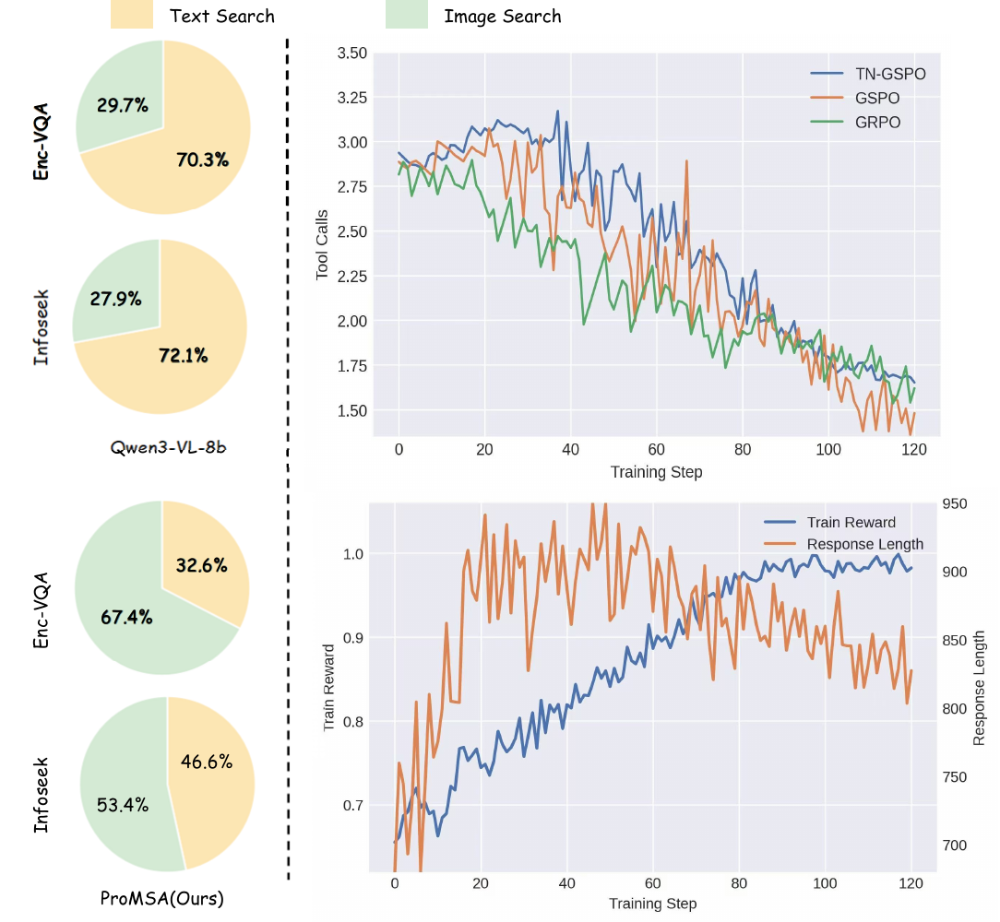
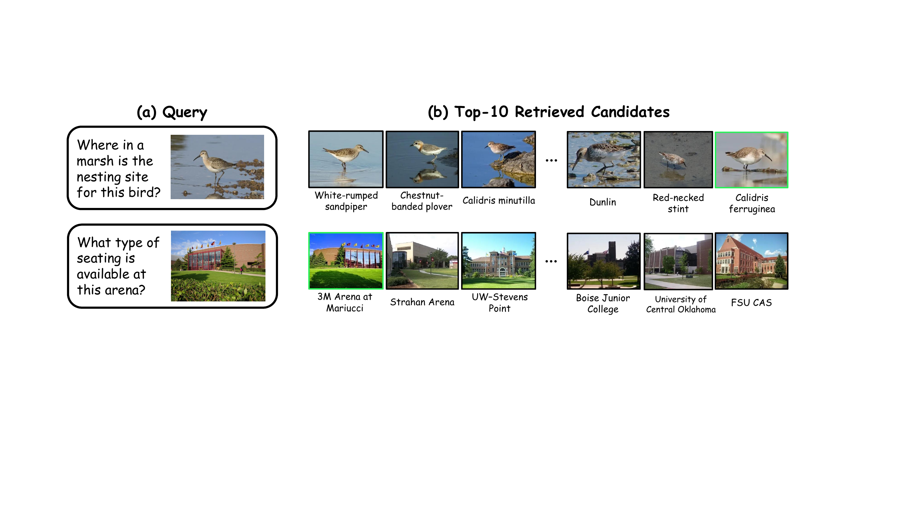

Search like a budget-aware researcher
Knowledge-based Visual Question Answering (KB-VQA) requires models to combine image understanding with external knowledge. Most prior methods use a fixed retrieve-then-generate pipeline with a pre-selected retriever and a static top-k setting, which is not adaptive during reasoning. We propose ProMSA, a progressive multimodal search agent for KB-VQA. Given an image–question pair, the agent iteratively chooses image search, text search, or stop, under explicit tool-call budgets and with deduplication to avoid redundant retrieval. For training, we first use rejection-sampling SFT to learn valid tool-use formats, then optimize the agent with TN-GSPO, a sequence-level RL objective that normalizes updates by both generation length and tool-interaction depth. Experiments on E-VQA and InfoSeek show consistent gains over strong RAG and agent baselines, and improved retrieval and end-to-end accuracy.
Retrieval becomes part of the reasoning
Instead of one fixed retrieval step, ProMSA unrolls a short, budgeted trajectory. It can switch modality and re-search with a de-duplication list when the first attempt drifts — then stop the moment the evidence is enough.
The lake isn't identifiable from the image alone — find the entity visually.
image searchTop candidate page:
Lake Köyceğiz (prior pages excluded)
Entity likely identified — confirm the country with a rewritten text query.
text searchquery: "Lake Köyceğiz country location"
"…a lake in southwestern Turkey."
Evidence is sufficient and consistent — stop and answer.
stop→ Turkey
Fixed pipelines can't recover from a wrong start
A single-shot RAG pipeline that drifts to the wrong entity is forced to answer on bad evidence. ProMSA re-searches with exclusion, switches between image and text retrieval, and accumulates evidence across rounds.

Normalize by the tool horizon, not just the length
In a search agent, what makes a trajectory hard is its tool-interaction depth H — how many retrievals it took — not the raw number of tokens. Standard GSPO normalizes the sequence ratio by generation length L alone, which biases the policy toward shorter outputs. TN-GSPO folds the tool horizon into the normalizer:
The reward is sparse and sequence-level: answer correctness (LLM-judge) + format − a tool-cost penalty λ·(#calls / Hmax), encouraging efficient retrieval under a fixed budget.
-
🖼
Image search
Reverse-image retrieval over a Wikipedia KB with an exclusion list, so repeated calls surface new candidates under appearance variation.
-
🔎
Text search
A model-rewritten query drives dense retrieval to fill in missing attributes once the entity is known.
-
⏹
Stop
The policy decides on its own when the gathered evidence is sufficient and emits the final answer.
-
🧭
Two-stage training
Rejection-sampling SFT cold-start teaches valid tool-call formats; RL with TN-GSPO learns the search policy.
State of the art on E-VQA and InfoSeek
| Method | Retriever | Model | E-VQA Single | E-VQA All | InfoSeek All |
|---|---|---|---|---|---|
| Qwen3-VL-8B (zero-shot) | — | — | 25.3 | 24.8 | 25.7 |
| MMSearch-R1 | BGE + EVA-CLIP | Qwen2.5-VL-7B | 40.6 | 40.7 | 39.7 |
| CC-VQA | EVA-CLIP-8B | Qwen2.5-VL-7B | 41.4 | 36.1 | 45.1 |
| REAL | EVA-CLIP-8B | Qwen3-VL-8B | 45.5 | 41.4 | 44.1 |
| ProMSA (Ours) | BGE + EVA-CLIP | Qwen2.5-VL-7B | 50.0 | 49.7 | 49.2 |
| ProMSA (Ours) | BGE + EVA-CLIP | Qwen3-VL-8B | 52.2 | 52.6 | 53.4 |
E-VQA reported with BEM; InfoSeek with VQA accuracy. See the paper for the full comparison, tool / budget / top-k ablations, inference-time analysis, and OK-VQA generalization.


BibTeX
@inproceedings{promsa2026,
title = {ProMSA: Progressive Multimodal Search Agents for
Knowledge-Based Visual Question Answering},
author = {Wu, ZhengXian and Xu, Hangrui and Shi, Kai and Chen, Zhuohong and
Yu, Yunyao and Zhang, Chuanrui and Liao, Zirui and Yang, Jun and
Yang, Zhenyu and Lu, Haonan and Wang, Haoqian},
booktitle = {Proceedings of the European Conference on Computer Vision (ECCV)},
year = {2026}
}